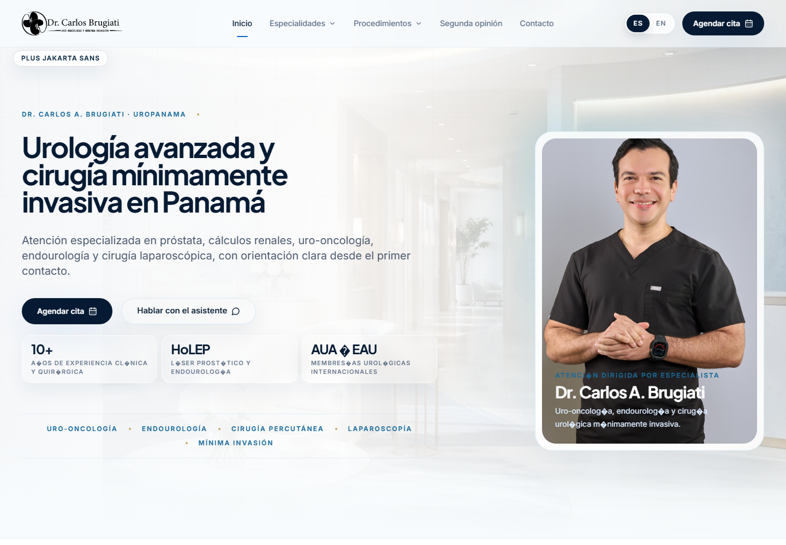
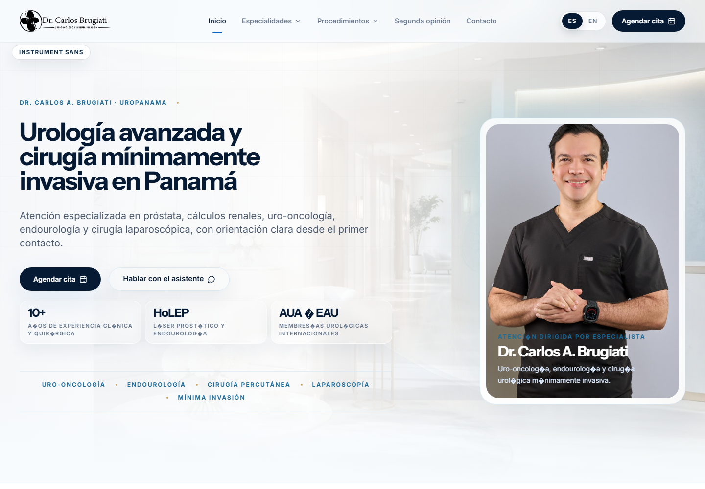
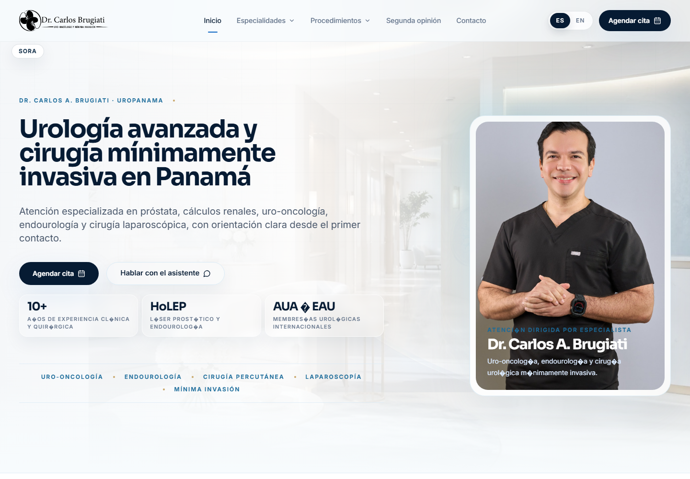
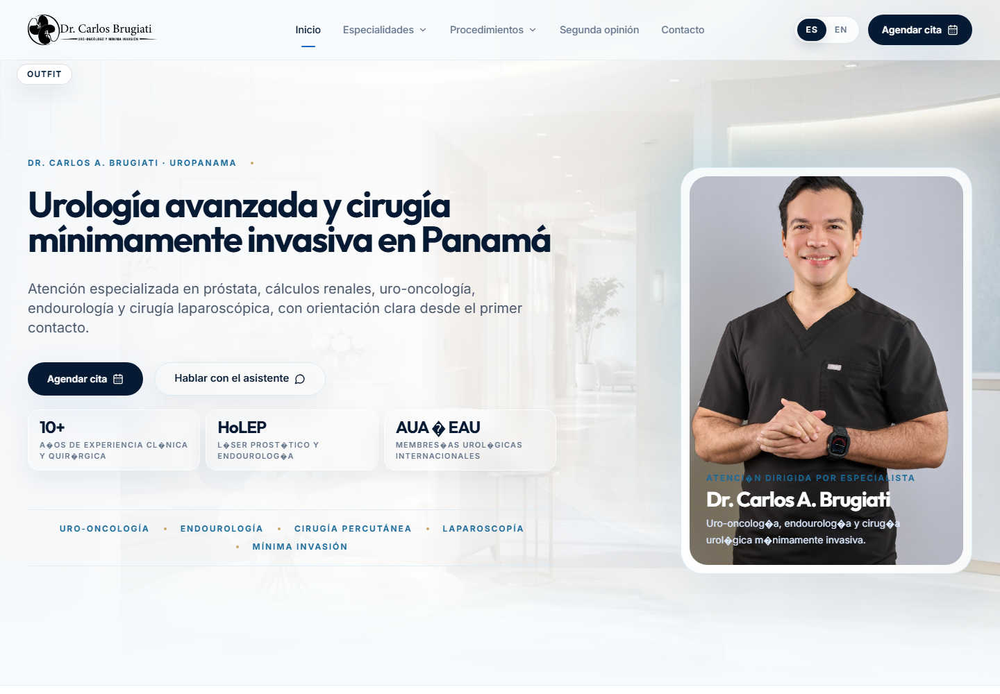
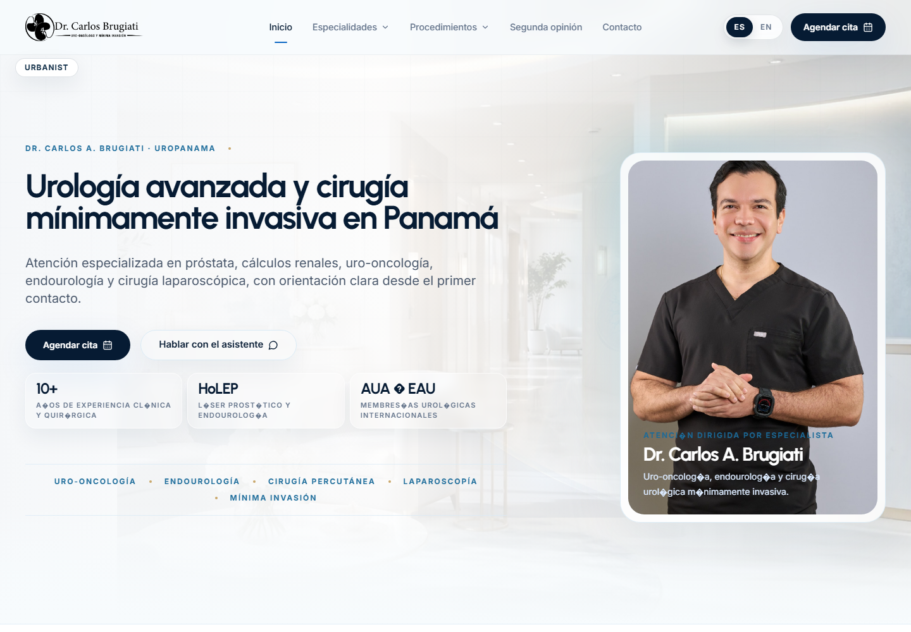
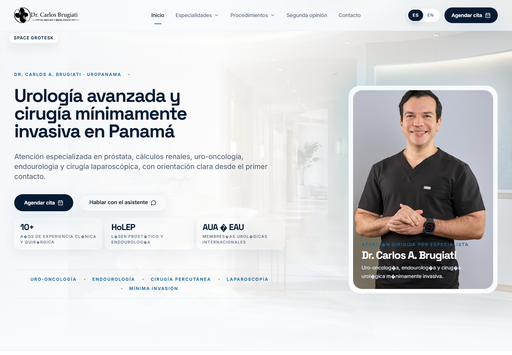

Headline Font Previews - Set 3
Modern status/service direction: private clinic, international care, premium digital concierge.
01 ManropePrivate-clinic modern, clean and quietly premium. 02 Plus Jakarta SansWorld-class service, polished, contemporary. 
03 Instrument SansRefined brand-system sans, very controlled. 
04 GeistMinimal, premium digital-product feel. 05 SoraPrecise, international, high-tech medical. 
06 OutfitGeometric, clean, upscale but approachable. 
07 UrbanistArchitecture/luxury-service energy, elegant sans. 
08 Albert SansNeutral, European, calm authority. 09 Schibsted GroteskEditorial sans with credibility and restraint. 10 Space GroteskModern specialist/technology signal. 